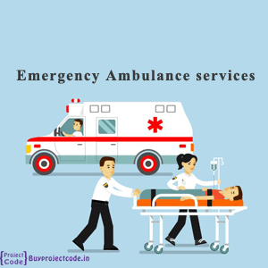

Book Ambulance and get it instantly - Anytime, Anywhere!
Get an ambulance at your doorstep in a few minutes.
This emergency medical services are the easiest and fastest way of booking an ambulance online.
ICARE has tied up with the government in the fight against COVID-19.
It has 100 ambulances solely for COVID-19 assistance.
You can make an ambulance booking and get the kind of ambulance best suited for your emergency.
ICARE provides four and two-wheeler ambulances, air ambulance, and train and water ambulances.
A mortuary ambulance can also be booked from here.
Key Features of our Ambulance Services
Unique Features of Our Ambulance Services
1. 10 different ambulance options available as per emergency and transport type
2. Coordination with city traffic police to clear congestion while transferring patients
3. Accurate location tracking; our ambulances reach your location without assistance
4. Free calling feature on app allows you to call ambulance driver for free

5. Highly professional ambulance drivers with a caring persona
6. Live track the location of your booked ambulance from its "starting point"
7. Surplus ambulances available so that one always reaches you
8. Well-equipped ambulances that are always prepared and ready for dispatch
9. Send SOS alerts from the ambulance to your saved contacts